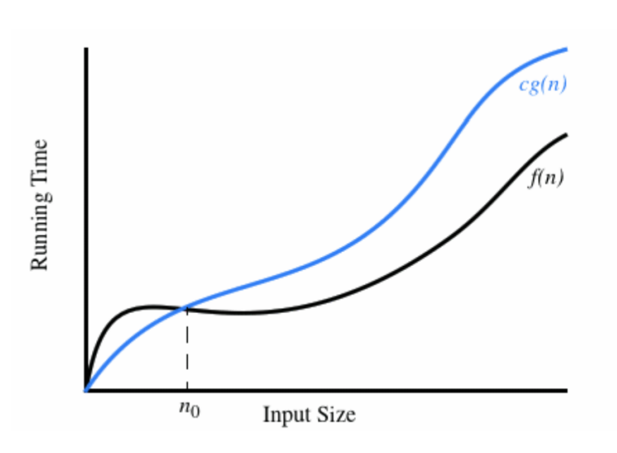
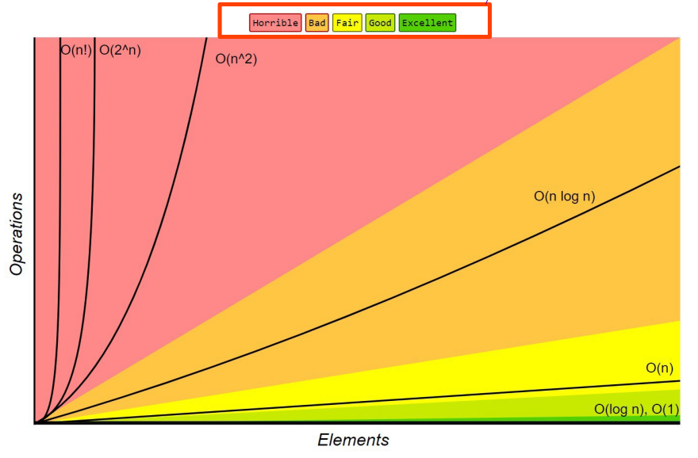

Tutorial 1 - Slides
Arrays
- Data structure storing a group of elements of the same type
- contiguous area of memory
| Action | Time |
|---|---|
| Access Element | Constant |
| Increase array size | Linear (need to allocate new memory + copy over elements) |
| Insert into middle of aray | Linear (usually new to allocate new memory, shift elements into insertion point) |
Algorithms
- Finite sequence of well-defined, computer implementable instructions
- Always unambiguous
- The user doesn't like to wait - we choose the fastest algorithms to solve our problems
Measure algorithms experimentally:
- One way to study the efficiency is to implement it and expierment with various inputs and record the time spent
- Plot results and complete statistical analysis
Issues with experimental analysis
- Difficult to compare unless tested on identical software and hardware
- May leave out certain inputs, which may be important and have different running times
Beyond experimental analysis
Develop an approach to analysing algorithm efficiency
- Allow us to evaluate relative efficiency of two algorithms
Important details to measure
- Runtime and memory
- Focussed on worst-case scenarios
- Can also analyse best case and average case scenarios, those these are typically harder to do
Theoretical Algorithm Analysis
- Describe using pseudocode
- Count primitive operations
- Describe the function of f(n)
- Number of inputs (n)
- Maximum/worst case number of primitive operations
- Perform asymptotic analysis
Asymptotic Analysis
Determine Big O, , bounds on runtime
- Big O notation describes the upper bound on the function
- Given functions and which map positive integers to positive real numbers, we say that:
If there exists constants and such that

Function grows asymptotically no faster than
- defines an infinite set of functions
- They have to be asymptotically equal
Big O
When we usually talk about asyptotic analysis, we use the following rules:
- Drop lower order terms and constants
- Make your bounds as tight as possible
- Simplify as much as possible
Important growth rates you need to know:
| Name | Notation |
|---|---|
| Constant | |
| Logarithmic | |
| Linear | |
| Log-linear | |
| Quadratic | |
| Cubic | |
| Exponential | |
| Factorial |

Big
Is the lower bound
We say that if there exists a constant and integer such that for all .
Big #\Theta$
Is the tight bound.
- Big exists iff Big O == Big
- Most simple functions (such as polynomials, exponentials, etc.) have big bounds.